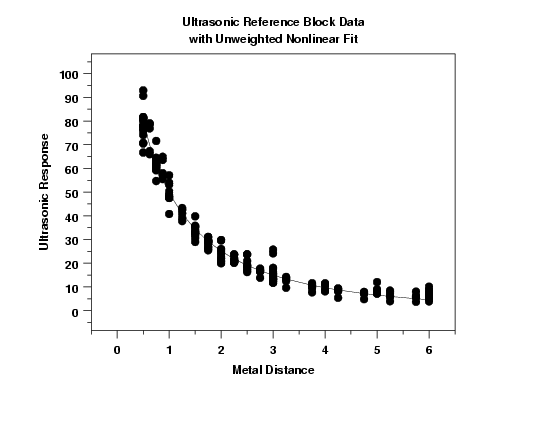
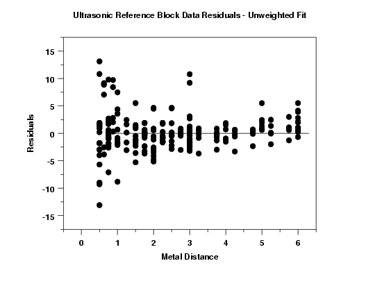

|
4.
Process Modeling
4.6. Case Studies in Process Modeling 4.6.3. Ultrasonic Reference Block Study
|
|||
| Plot of Data |
The first step in fitting a nonlinear function is to
simply plot the data.
This plot shows an exponentially decaying pattern in the data. This suggests that some type of exponential function might be an appropriate model for the data. |
||
| Initial Model Selection |
There are two issues that need to be addressed in
the initial model selection when fitting a nonlinear
model.
|
||
| Determining an Appropriate Functional Form for the Model |
Due to the large number of potential functions that can
be used for a nonlinear model, the determination of an
appropriate model is not always obvious. Some
guidelines for selecting
an appropriate model were given in the analysis
chapter.
The plot of the data will often suggest a well-known function. In addition, we often use scientific and engineering knowledge in determining an appropriate model. In scientific studies, we are frequently interested in fitting a theoretical model to the data. We also often have historical knowledge from previous studies (either our own data or from published studies) of functions that have fit similar data well in the past. In the absence of a theoretical model or experience with prior data sets, selecting an appropriate function will often require a certain amount of trial and error. Regardless of whether or not we are using scientific knowledge in selecting the model, model validation is still critical in determining if our selected model is adequate. |
||
| Determining Appropriate Starting Values |
Nonlinear models are fit with iterative methods that
require starting values. In some cases, inappropriate
starting values can result in parameter estimates
for the fit that converge to a local minimum or maximum
rather than the global minimum or maximum.
Some models are relatively insensitive to the choice
of starting values while others are extremely
sensitive.
If you have prior data sets that fit similar models, these can often be used as a guide for determining good starting values. We can also sometimes make educated guesses from the functional form of the model. For some models, there may be specific methods for determining starting values. For example, sinusoidal models that are commonly used in time series are quite sensitive to good starting values. The beam deflection case study shows an example of obtaining starting values for a sinusoidal model. In the case where you do not know what good starting values would be, one approach is to create a grid of values for each of the parameters of the model and compute some measure of goodness of fit, such as the residual standard deviation, at each point on the grid. The idea is to create a broad grid that encloses reasonable values for the parameter. However, we typically want to keep the number of grid points for each parameter relatively small to keep the computational burden down (particularly as the number of parameters in the model increases). The idea is to get in the right neighborhood, not to find the optimal fit. We would pick the grid point that corresponds to the smallest residual standard deviation as the starting values. |
||
| Fitting Data to a Theoretical Model | For this particular data set, the scientist was trying to fit the following theoretical model. $$ y = \frac{\exp(-b_1 x)} {b_2 + b_3 x} + \varepsilon $$ Since we have a theoretical model, we use this as the initial model. We set the starting values for all three parameters to 0.1. | ||
| Nonlinear Fit Results |
The following results were generated for the nonlinear fit.
Parameter Estimate Stan. Dev t Value b1 0.190279 0.2194E-01 8.6 b2 0.006131 0.3450E-03 17.8 b3 0.010531 0.7928E-03 13.3 Residual standard deviation = 3.362 Residual degrees of freedom = 211 |
||
| Plot of Predicted Values with Original Data |

This plot shows a reasonably good fit. It is difficult to detect any violations of the fit assumptions from this plot. The estimated model is $$ \hat{y} = \frac{\exp(-0.190x)} {0.00613 + 0.0105x} $$ |
||
| 6-Plot for Model Validation |
When there is a single independent variable, the
6-plot
provides a convenient method for initial model
validation.
The basic assumptions for regression models are that the errors are random observations from a normal distribution with zero mean and constant standard deviation (or variance). These plots suggest that the variance of the errors is not constant. In order to see this more clearly, we will generate full- sized a plot of the predicted values from the model and overlay the data and plot the residuals against the independent variable, Metal Distance. |
||
| Plot of Residual Values Against Independent Variable |

This plot suggests that the errors have greater variance for the values of metal distance less than one than elsewhere. That is, the assumption of homogeneous variances seems to be violated. |
||
| Non-Homogeneous Variances | Except when the Metal Distance is less than or equal to one, there is not strong evidence that the error variances differ. Nevertheless, we will use transformations or weighted fits to see if we can elminate this problem. | ||

{kind=link}
{kind=link}
{kind=link}
{kind=link}